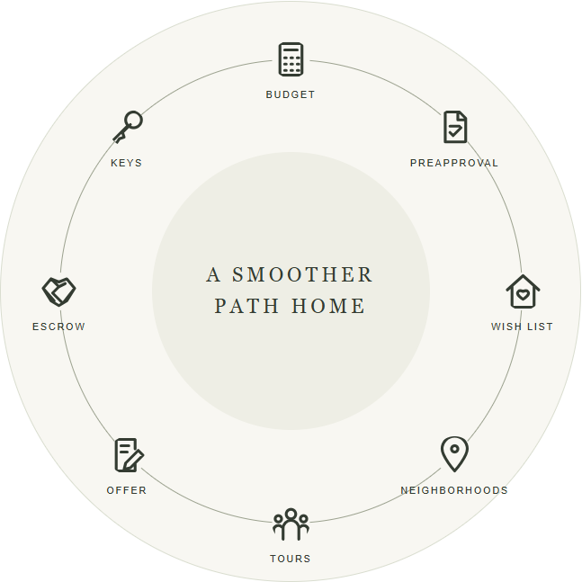
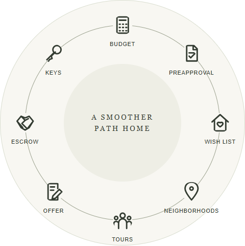
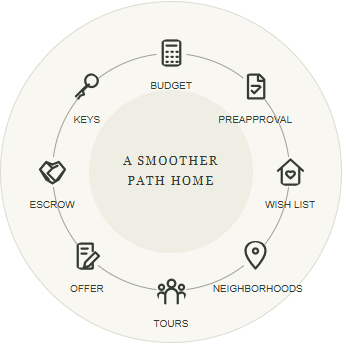
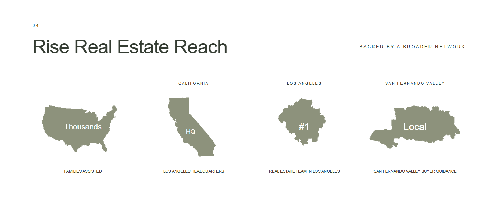
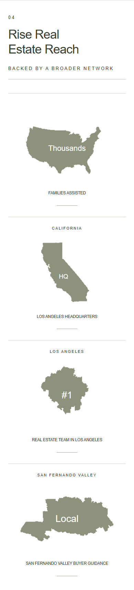
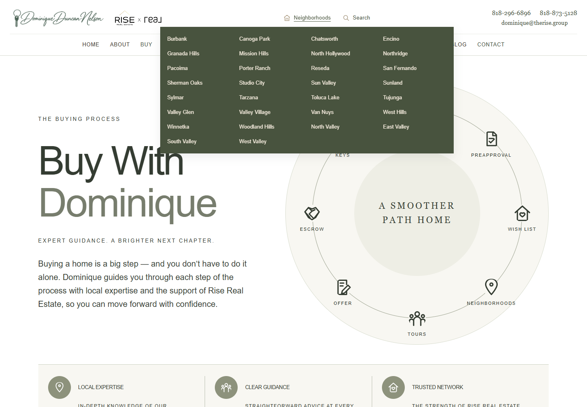
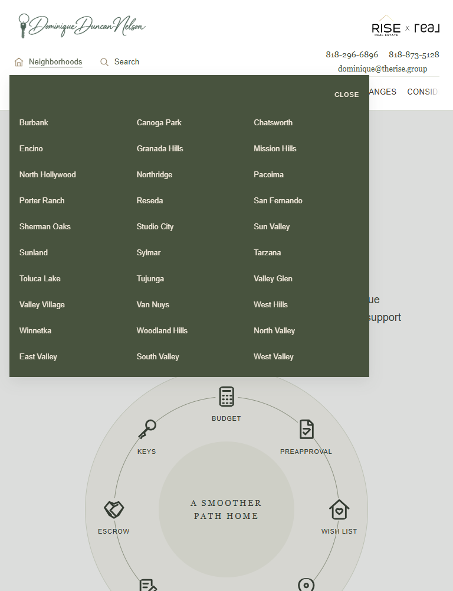
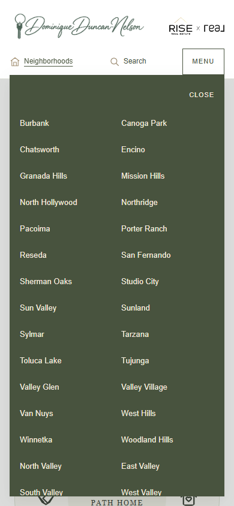

All eight wheel icon centers now lie on the same process ring, with identical label offsets. Budget, Keys and Preapproval follow the same placement rule as Tours, Offer and Escrow. On phones, the ring has room for every label within the module. All original icons, stages, wording and diagram content remain intact.
Map text was reduced to 22px for Thousands, 18px for HQ, and 28px for the other two labels. Geography and original map labels are unchanged. The Buy stylesheet URL was versioned so the browser loads these current refinements.
Neighborhoods retains the existing centered dropdown, city columns, all 30 direct links, desktop hover, touch opening and Escape behavior. Its background is now dark sage (#48533e), with warm ivory/tan text (#f3eadc). Search remains a direct link without a dropdown. No other content or chat-box behavior changed.
Verified actual Chrome CSS viewport widths 320, 390, 650, 768, 1024, 1440 and 1920px. Geometry checks confirm equal icon distance from the center, matched icon/label centering and identical label gaps, with no horizontal page overflow. Actual desktop/iPad/phone screenshots were inspected, and the final map text sizes were checked again at 390, 768 and 1440px.
Source comparison confirms only the eight wheel positions and stylesheet version changed in Buy HTML. All content, chart values, map vectors, links and metadata are preserved. Styles are scoped to Buy and the Neighborhoods dropdown. Nothing was committed, pushed, deployed or published.
Open the updated Buy page ? Verification results







